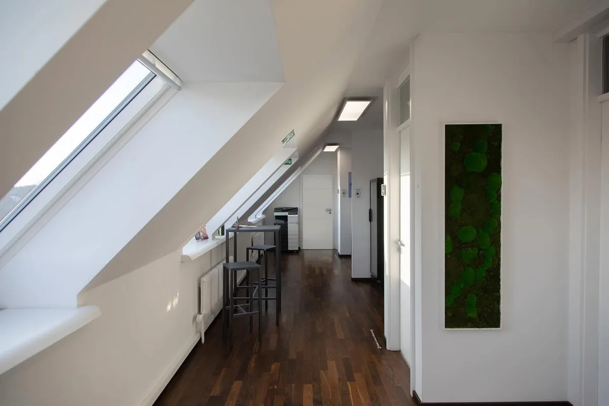
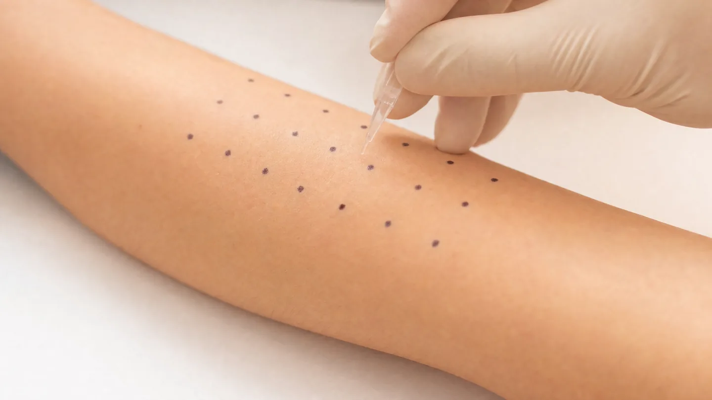

Allergologie · Chemnitz
Allergietest
in Chemnitz
Pricktest und Epikutantest zeigen, worauf Ihre Haut oder Ihr Immunsystem tatsächlich reagiert – und was nur im Verdacht stand.
Was reagiert – und wie schnell
Allergie ist nicht gleich Allergie. Entscheidend ist, wie schnell der Körper reagiert – danach richtet sich, welcher Test Antworten liefert.
Der Pricktest prüft Reaktionen vom Soforttyp: Pollen, Hausstaubmilben, Tierhaare, Schimmelpilze, einzelne Nahrungsmittel. Auf den Unterarm werden Tropfen aufgebracht und die Haut darunter minimal angeritzt. Nach etwa 20 Minuten lässt sich ablesen, wo eine Quaddel entsteht.
Der Epikutantest (Pflastertest) sucht Kontaktallergien vom Spättyp – Nickel, Duftstoffe, Konservierungsmittel, Bestandteile von Kosmetika, Berufsstoffe. Die Testsubstanzen bleiben unter Pflastern auf dem Rücken und werden über mehrere Tage abgelesen. Das heißt: Sie kommen dafür mehrfach in die Praxis, und der Rücken darf in dieser Zeit nicht nass werden.
Ein Einblick

KI-generiertes Symbolbild. Es zeigt keine Patientin und keinen Patienten unserer Praxis.
So läuft es ab
Anamnese
Wann treten die Beschwerden auf, wo, in welcher Jahreszeit, bei welcher Tätigkeit? Das grenzt ein, wonach überhaupt gesucht wird.
Testauswahl
Wir legen fest, ob ein Pricktest, ein Epikutantest oder beides sinnvoll ist – und welche Substanzreihen getestet werden.
Durchführung
Beim Pricktest auf dem Unterarm, beim Epikutantest mit Pflastern auf dem Rücken. Die Ablesetermine bekommen Sie direkt mit.
Befund & Konsequenz
Ein positiver Test allein ist noch keine Diagnose. Wir ordnen das Ergebnis Ihren Beschwerden zu und besprechen, was daraus folgt.
Häufige Fragestellungen
Allergietest – Ihre Fragen
Muss ich Medikamente vorher absetzen?
Antihistaminika können das Ergebnis verfälschen und sollten einige Tage vorher pausiert werden. Auch Kortison-Präparate spielen eine Rolle. Sprechen Sie uns vor dem Termin darauf an – bitte setzen Sie nichts eigenmächtig ab.
Wie oft muss ich für den Epikutantest kommen?
In der Regel dreimal innerhalb einer Woche: zum Aufkleben und zu zwei Ableseterminen. Zwischendurch dürfen die Pflaster nicht nass werden, Sport und Sauna fallen in dieser Zeit aus.
Ist der Test schmerzhaft?
Der Pricktest ist ein leichtes Anritzen der Haut, kaum spürbar. Beim Epikutantest kann es an positiven Stellen jucken – genau das ist die Reaktion, die wir sehen wollen.
Führen Sie auch eine Hyposensibilisierung durch?
Nein. Wir testen und ordnen den Befund ein, eine spezifische Immuntherapie (Hyposensibilisierung) bieten wir nicht an. Wenn sie für Sie in Frage kommt, besprechen wir, wo sie durchgeführt werden kann.
Kann ich mit Beschwerden zum Test kommen?
Die Testareale sollten erscheinungsfrei sein. Bei einem akuten Schub verschieben wir den Termin lieber, sonst ist das Ergebnis nicht verwertbar.
Termin vereinbaren
Vereinbaren Sie einen Termin zur allergologischen Abklärung – wir planen die Tests passend zu Ihren Beschwerden.
Leipziger Straße 137, 09113 Chemnitz · Mo – Do 08:00–18:00 · Fr 08:00–14:00
Hinweis: Diese Seite dient der allgemeinen Information und ersetzt keine ärztliche Beratung oder Diagnose. Ein positiver Testbefund bedeutet nicht automatisch eine behandlungsbedürftige Allergie; maßgeblich ist der Zusammenhang mit Ihren Beschwerden. Ob und in welchem Umfang Ihre Krankenkasse eine Leistung übernimmt, klären wir im persönlichen Gespräch. Das Foto im Kopfbereich zeigt unsere Praxisräume in Chemnitz. Das Symbolbild im Text wurde mit künstlicher Intelligenz erzeugt und zeigt weder reale Patientinnen und Patienten noch tatsächliche Aufnahmen aus unserer Praxis.